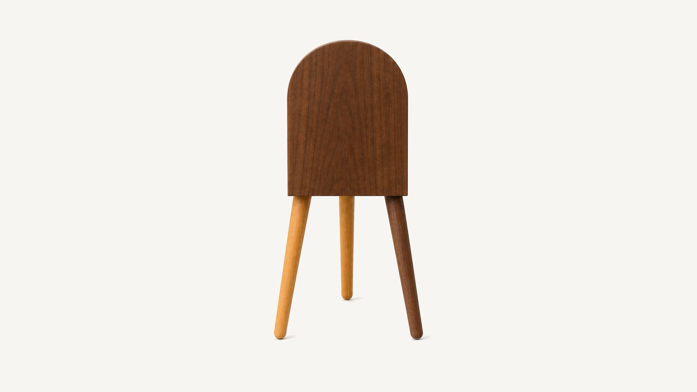
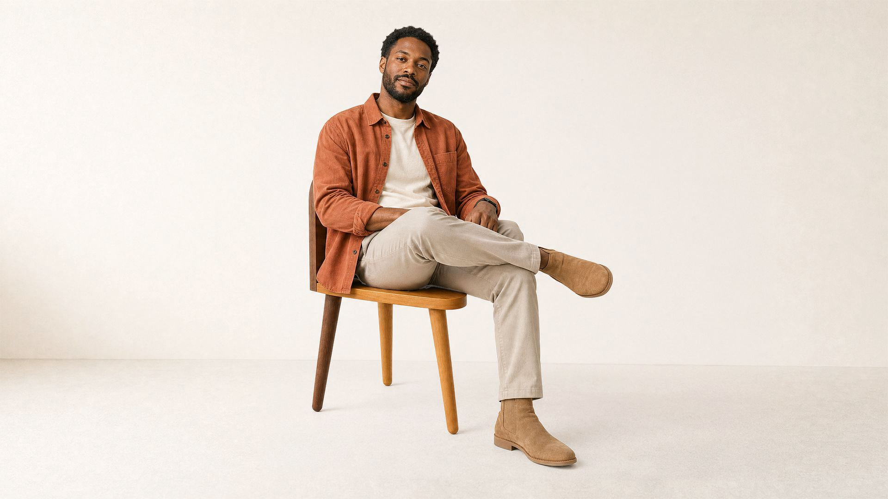
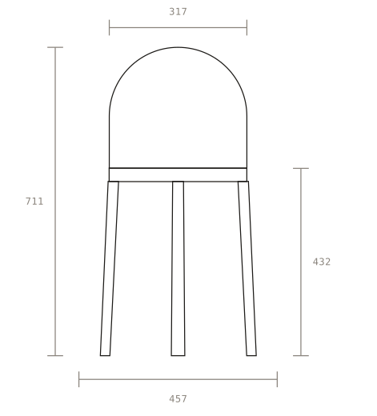

Shard
Geometry as ritual.
A bold arched backrest paired with a crisp triangular seat — a sculptural balance of form and function in warm walnut and oak.

The body
Three points of contact.
A triangular seat on three tapered legs — the fewest points a chair needs to stand, and steady even where the floor isn’t.
Construction


Backrest
Solid walnut, a single arch.
Seat
Oak, triangular, with visible grainline.
Legs
Three tapered legs.
FPO — Shard in context
Drawing

711
mm — overall height
- Height
- 711 mm
- Seat height
- 432 mm
- Width
- 457 mm
- Depth
- —
- Backrest
- Solid walnut
- Seat
- Oak, visible grainline
- Finish
- Natural oil
The collection, same angle
TotemView →
ShardCurrent

FloatView →